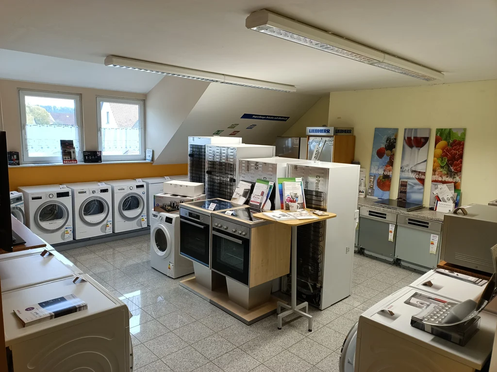

Geräte auswählen
Welche Funktionen werden wirklich gebraucht? Wir unterstützen Sie bei der Auswahl für Ihren Haushalt.
Hausgeräte & Einbaugeräte
Vom passenden Einbaugerät bis zu Kühl- und Gefriergeräten: Im Verkaufsbereich in Archshofen können Sie Geräte persönlich kennenlernen und Fragen direkt besprechen.

04 / Beratung, Verkauf & Service
Ein gutes Ergebnis beginnt mit einem persönlichen Gespräch. Wir klären Ihren Bedarf und besprechen die nächsten Schritte.
Ihr Vorhaben besprechenWelche Funktionen werden wirklich gebraucht? Wir unterstützen Sie bei der Auswahl für Ihren Haushalt.
Einbauküchen und Einbaugeräte gehören zu unserem Angebot. Die Umsetzung stimmen wir auf Ihre Situation ab.
Auch nach dem Kauf sind fachgerechte Wartung und Reparaturen Teil unserer Leistungen.
Reden wir darüber.
Eine Frage, eine Idee oder schon ein konkreter Plan?
Wir freuen uns auf Ihren Anruf.